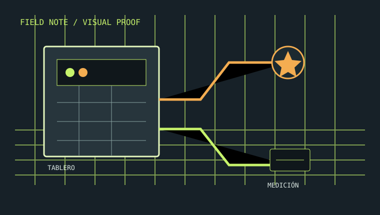

01 / URGENTE
Hay una falla ahora
Olor a quemado, chispas, una térmica que salta o sectores sin energía. Se prioriza la seguridad y se define qué puede aislarse sin improvisar.
Describir una falla →Servicio eléctrico · método antes que promesas
Una forma ordenada de entender qué ocurre, qué se va a hacer y cómo se documenta. Para resolver una falla, planificar una instalación o revisar una situación antes de decidir.
Sin promesa de respuesta inmediata: primero se confirma alcance y disponibilidad.

La evidencia no reemplaza una inspección: hace visible la conversación.
Una decisión mejor informada
Un trabajo eléctrico responsable necesita límites: qué se observó, qué quedó fuera, qué riesgo se detectó y qué debería revisarse después. Esta demo convierte esas respuestas en una experiencia simple de consultar.
Elegí el punto de partida
La primera clasificación evita presupuestos vagos y ayuda a reunir la información correcta.
Olor a quemado, chispas, una térmica que salta o sectores sin energía. Se prioriza la seguridad y se define qué puede aislarse sin improvisar.
Describir una falla →Tableros, circuitos, iluminación, tomas o ampliaciones. Se ordenan uso, cargas, materiales y etapas antes de romper o comprar.
Planificar un trabajo →Una vivienda, un local o una instalación existente. La revisión puede producir un mapa de hallazgos y recomendaciones; certificaciones requieren alcance específico.
Consultar una inspección →Cómo se trabaja
Un proceso explicable reduce ansiedad y hace más fácil comparar opciones sin prometer resultados que todavía no fueron verificados.
Empezar con contexto por WhatsApp ↗Qué pasó, desde cuándo, qué cambió y qué zonas están involucradas.
Observación y mediciones acordes al caso. Si no se puede verificar, se dice.
Se separa lo necesario de lo recomendable, con límites antes de ejecutar.
Resumen de lo realizado, evidencia disponible y próximos cuidados.
Casos ilustrativos · no son trabajos reales
Ejemplos editables del tipo de información que puede mostrar una publicación real, sin inventar clientes, métricas ni resultados.
Caso demo · instalación
Caso demo · diagnóstico
Cobertura y límites
La zona de atención se completa con el negocio real. Esta demo no publica una dirección ni promete cobertura automática.
Ante humo, fuego o riesgo de contacto, cortar la energía solo si es seguro y recurrir a emergencias correspondientes. No intervenir sobre redes energizadas.
Inspeccionar no equivale a certificar. Matrículas, firmas, normativa y habilitaciones solo se agregan cuando estén verificadas.
Preguntas frecuentes
No. La consulta permite ordenar síntomas y contexto. El diagnóstico se confirma con una inspección y mediciones adecuadas al caso.
La demo contempla un camino para fallas urgentes. La disponibilidad, el alcance y el horario deben definirse con el negocio real antes de publicar.
Según el servicio, puede recibir un resumen de hallazgos, alcance ejecutado, recomendaciones y registro visual. El formato final se acuerda antes de comenzar.
No necesariamente. Una inspección y una certificación son alcances distintos; la documentación y la habilitación dependen del caso y de la normativa aplicable.
Conversación inicial · demo
Escribí por WhatsApp con la opción que mejor describa tu consulta. No hace falta resolver todo en el primer mensaje; el alcance y la disponibilidad se confirman con el negocio real.